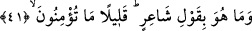

eğer müşriklerden biri senden aman dilerse Allah’ın kelâmını işitip dinleyinceye
kadar ona aman ver, sonra onu güven içinde bulunacağı bir yere ulaştır.” (et-Tevbe,
9/6)
Keşfu’l-esrar’da şöyle denir: Allah bu âyet-i kerîmede sözü, “şerefli bir elçinin
sözü” diyerek Peygamberimiz (s.a.)’e izâfe ediyor. Çünkü bu ifâde içerisinde yer alan
“rasûl” kelimesi, onun Allah tarafından gönderilmiş bir elçi olduğunu gerektirir. Şu
hâlde onun okumuş olduğu sözün onu gönderen yaratıcının sözü olduğu, kendisinin
sâdece Rabbı adına tebliğ eden bir peygamber olduğu -kendiliğinden- ortaya çıkar. Şu
hâlde buradaki izâfet, bir başka ifâde ile sözün peygamberle bağlantısı, o sözün sâdece
tebliğ bakımından peygambere âid olduğuna işâret eder. Çünkü peygamberin
fonksiyonu, -kendiliğinden birşey ortaya koymak, icad etmek değil-, kendisini
gönderenin sözünü tebliğ etmek, aktarmaktır. Sonra Kur’ân-ı Kerim’de bazen “kavl/söz”
kelimesi, “kırâat/okumak” anlamına gelir. Sözgelimi “Ey îman edenler! Siz sarhoş
iken -ne söylediğinizi bilinceye kadar- cünup iken de -yolda olan müstesnâ- gusül
edinceye kadar namaza yaklaşmayın” (en-Nisa, 4/43) âyet-i kerîmesinde “ne
söylediğinizi” ifâdesi “namazınızda ne okuduğunuzu” şeklinde anlaşılmalıdır.
Âyette bahsedilen “Allah’ın katında çok şerefli bir elçi”den maksad, Peygamber
Efendimiz’dir. Bundan maksadın o olduğuna delil, “rasûl” kelimesinin biraz sonra
gelecek âyette “şâir” ve “kâhin” şeklinde karşılanmış olmasıdır. Zira bu âyet-i kerîme
Peygamber Efendimiz’in ne bir şâir ve ne de bir kâhin olmadığını ortaya koymak ve
ispat etmek için sevkedilmiştir. Müşrikler Cebrâil için şâir ve kâhin demediklerine göre
buradaki “rasûl”den maksad Peygamber Efendimiz olur. Bâzı âlimler bunun Cebrâil
olduğunu ileri sürmüşlerdir. Buna göre âyetin mânâsı; “Hiç şüphesiz o çok şerefli bir
elçinin; yâni Cebrâil’in sözüdür. Şâir ya da kâhin olduğunu iddiâ ettiğiniz ve ileri
sürdüğünüz Muhammed’in sözü değildir” demek olur. Bu takdirde âyetin sevkinden
maksad, -yukarda olduğu gibi Peygamber Efendimiz’in şâir ve kâhin olmadığını ispat
değil- Kur’an’ın gerçek bir kitap olduğunu ve onun Allah’ın katından indirilme bir kitap
olduğunu ispat olmuş olur. Kısacası; Kur’an-ı Kerim gerçekten Allah’ın kelamıdır.
Allah Teâlâ onu levh-i mahfuzunda ortaya çıkarmıştır. Kur’an aynı zamanda, Cebrâil
tarafından göklerden yere indirilmiş ve peygamberlerin sonuncusu Hz. Muhammed
(s.a.)’e okunmuş olması bakımından Cebrâil’in sözüdür. Öte yandan bu kitap Seyyidü’l-
mürselin Hz. Muhammed (s.a.)’in de sözüdür. Çünkü bu kitabı insanlara okuyan,
insanları ona îman etmeye çağıran ve bu kitabı kendi peygamberliğine delil olarak
gösteren odur.
41. Ve o, bir şâir sözü değildir. Ne de az îman ediyorsunuz!